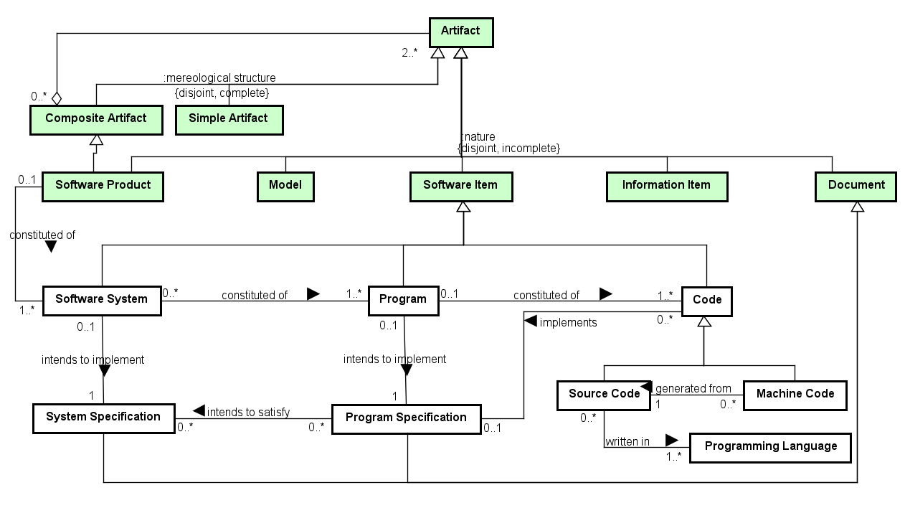

Networked ontologies used by SwO:
| Ontology | Relation | Integration Level |
| UFO - Unified Foundational Ontology | ||
| UFO - Unified Foundational Ontology | ||
| SPO - Software Process Ontology | ||
| SPO - Software Process Ontology |
Figure 1 presents the conceptual model of the SwO.

Figure 1. SwO conceptual model.
The Software Ontology (SwO) captures that software products have a complex artifactual nature, being constituted of software artifacts of different nature, including software systems, programs and code.
Figure 2 presents the packages of the SysSwO Modularization.
Figure 2. SysSwO Modularization.
Figure 3 presents the conceptual model of the Computer System subontology.

Figure 3. Computer System conceptual model.
Figure 4 presents the conceptual model of the Hw Equipment subontology.

Figure 4. Hw Equipment conceptual model.
The following table shows the definitions for SwO concepts.
| Concept | Definition |
| Code
|
Software Item representing a set of computer instructions and data definitions expressed in a programming language or in a form output by an assembler, compiler, or other translator (SEVOCAB).
|
| Complex Computer System
|
|
| Computer System
|
System containing one or more Computer Machines, and other Hardware Equipments connected to them, and associated software systems that are installed/loaded in these Machines (adapted from ISO/IEC/IEEE 24765:2017).
|
| Loaded Software System Copy
|
Loaded Software System Copy is the materialization of a Software System, inhering in a Computer Machine.
Ex.: a copy of a software system loaded in the primary memory of my computer. |
| Machine Code
|
Computer instructions and data definitions expressed in a form output by an assembler, compiler, or other translator, which can be recognized by the processing unit of a computer machine.
|
| Program
|
Software Item which aims at producing a certain result through execution on a computer, in a particular way, given by the Program Specification. A Program is constituted by code, but it is not identical to code. Code can be changed without altering the identity of its program, which is anchored to the program's essential property: its intended specification (Program Specification).
|
| Program Specification
|
A document that describes the purpose (structure and functions) of a program in sufficient detail to permit coding and to facilitate maintenance.
|
| Programming Language
|
A language used to express computer programs.
|
| Software System
|
Software Item that aims at satisfying a specification (System Specification), concerning a desired change in a data structure inside a computer, abstracting away from the behavior.
|
| Source Code
|
A well-formed sequence of computer instructions and data definitions expressed in a programming language, in a form suitable for input to an assembler, compiler, or other translator. |
| System Specification
|
|
<<subkind>>Code |
Code (0..*) implements (0..1) Program Specification
Program (0..1) constituted of (1..*) Code
Code Documentation changes Code
Code Development creates Code
Code Review uses Code
| Complex Computer System |
Complex Computer System (0..*) <>-- (2..*) Computer System
| Computer System |
Computer System (0..*) <>-- (1..*) Machine
Computer System (0..*) <>-- (1..*) Hardware Equipment
Computer System (1..*) has (1..*) Loaded Software System Copy
Complex Computer System (0..*) <>-- (2..*) Computer System
| Loaded Software System Copy |
Loaded Software System Copy (0..*) materialization of (1..1) Software System
Loaded Software System Copy (0..*) inheres in (1..1) Machine
Loaded Software System Copy (1..1) includes (1..*) Loaded Program Copy
Computer System (1..*) has (1..*) Loaded Software System Copy
<<subkind>>Machine Code |
Machine Code (0..*) generated from (1..1) Source Code
<<subkind>>Program |
Program (0..1) constituted of (1..*) Code
Program (0..1) intends to implement (1..1) Program Specification
Program (0..*) implements (1..*) Software Function Universal
Program (0..*) \intends to satisfy (1..*) Requirement Artifact
Program (0..*) implements (0..*) Quality Characteristic
Loaded Program Copy (0..*) materialization of (1..1) Program
Software System (0..*) constituted of (1..*) Program
<<subkind>>Program Specification |
Program Specification (0..*) intends to satisfy (0..*) System Specification
Program Specification (0..*) intends to satisfy (1..*) Requirement Artifact
Program Specification (0..*) describes (1..*) Software Function Universal
Program (0..1) intends to implement (1..1) Program Specification
Code (0..*) implements (0..1) Program Specification
<<kind>>Programming Language |
Source Code (0..*) written in (1..*) Programming Language
<<subkind>>Software System |
Software System (0..*) constituted of (1..*) Program
Software System (0..1) intends to implement (1..1) System Specification
Loaded Software System Copy (0..*) materialization of (1..1) Software System
Software Product (0..1) constituted of (1..*) Software System
<<subkind>>Source Code |
Source Code (0..*) written in (1..*) Programming Language
Machine Code (0..*) generated from (1..1) Source Code
<<subkind>>System Specification |
Program Specification (0..*) intends to satisfy (0..*) System Specification
Software System (0..1) intends to implement (1..1) System Specification